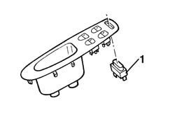

7010M16 rear electric window enablement switch - r+r
- Path
- Procedures > 70 FITTINGS > 7010 PASSENGER COMPARTMENT REAR SIDE DOORS > 7010M rear electric windows > 7010M16 rear electric window enablement switch - r+r
- Kind
- repair procedure (removal / refitting; the operation number is the code)
- Applies to
- all engines; all production periods
- Interactive page
- https://sloeber94.github.io/elrnDB-a156/en/#/3238688
Applies to: all engines; all production periods; only with equipment: Rear power windows
 Removing
Removing
 Refitting
Refitting7005E38 front side door interior handle-r r
1. Remove the l'enablement switch.

Applies to: all engines; all production periods; only with equipment: Rear power windows
Refitting
RemovingCheck the function of the 'switch. If necessary, check the l'switch electrically.
Insert the l'switch.
7005E38 front side door interior handle-r r
Check the function of the device.